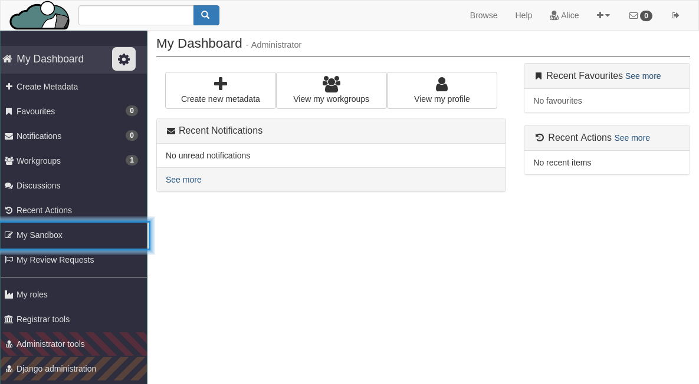
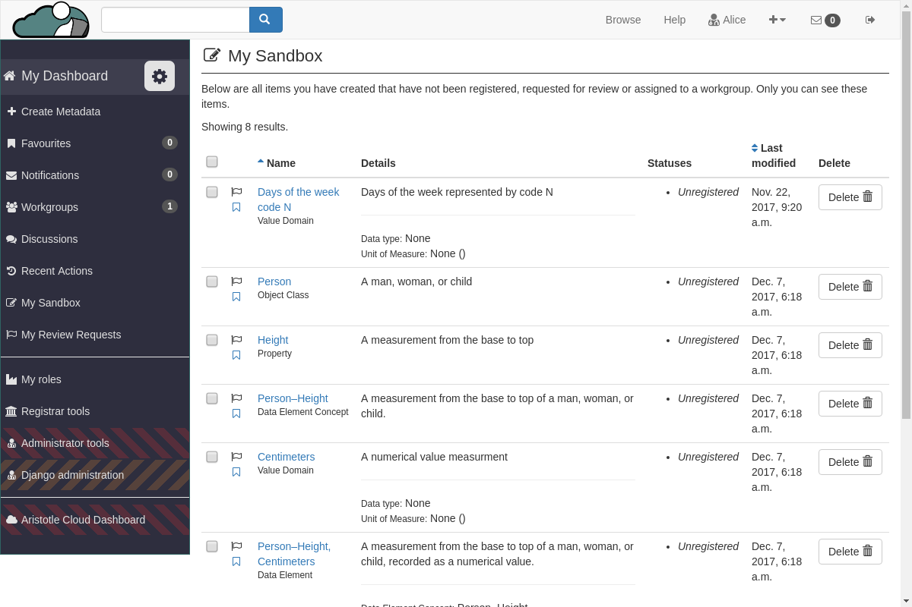

How to create or update a Share Link from your Sandbox¶
Go to your Sandbox
From your Dashboard side panel, select “My Sandbox”.
Select “Create Share Link”
In the top right corner of the page, select the “Create Share Link” button.
Enter emails
Once you click the “Create Share Link” button, a pop-up modal will appear. You will be able to enter emails for people you want to share your Sandbox content with.

You are only allowed to enter one email address per line, but selecting “Add” will let you add more emails.
Only emails with this Registry’s credentials will be allowed to access the content from the Share Link.
Create or Update the share link
Once you’ve entered the emails select “Create” or “Update” to generate or update a Share Link.
If this is your first time generating a share link, the modal will exit and the link will show up in a blue box at the top of your Sandbox.

If you are updating the emails for the share link, once you select “Update” a green box will tell you that you’ve updated the share permissions.